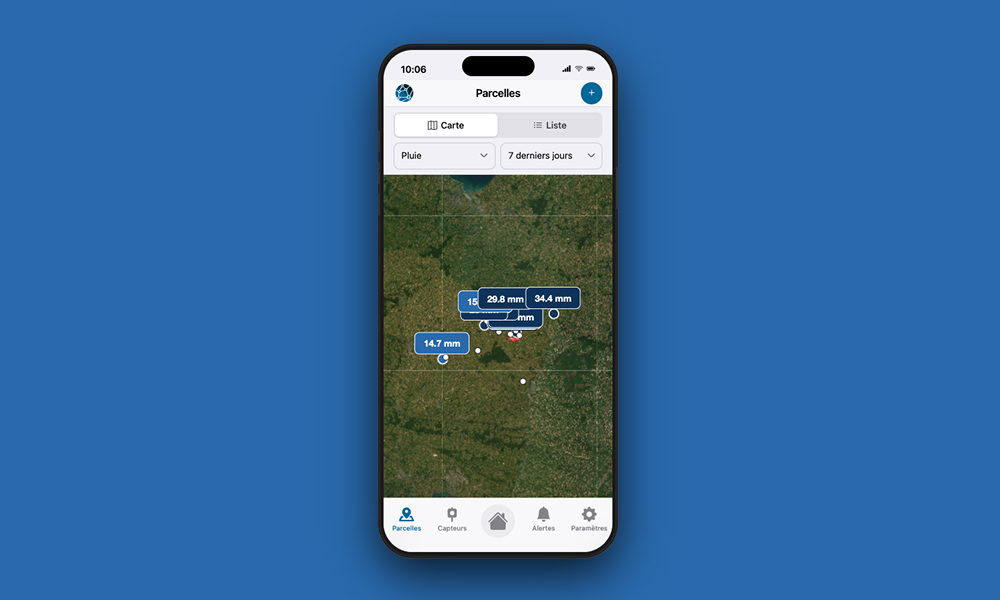
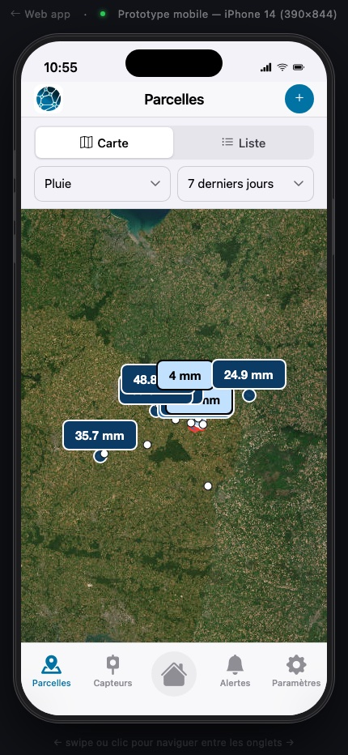
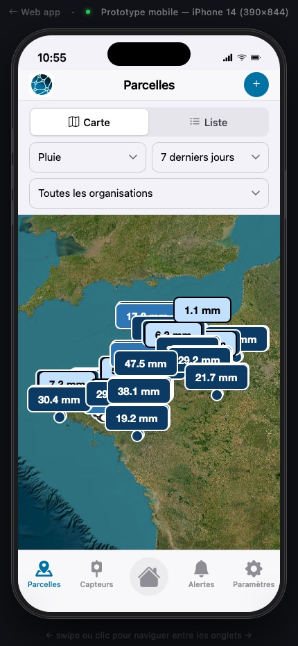
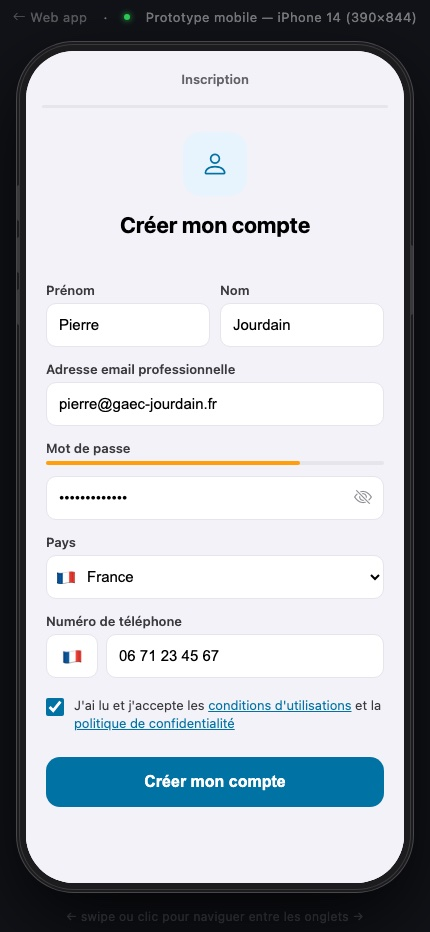
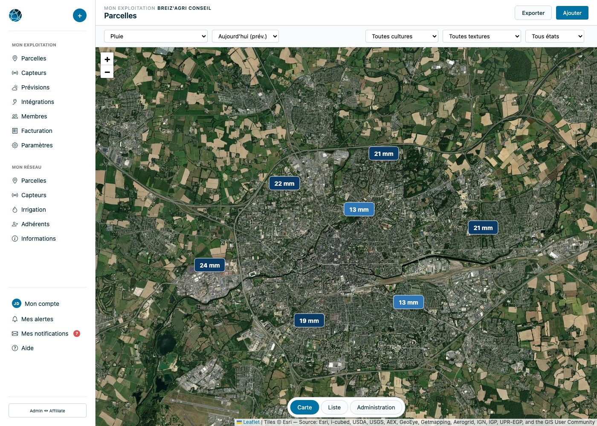

Publié le 04/08/2026
Weenat est un éditeur français de solutions de monitoring agro-météo : des stations connectées (pluviomètre, thermomètre, hygromètre, sondes de sol...) couplées à des prévisions, le tout restitué dans une application web et mobile à destination des agriculteurs et de leurs réseaux d'accompagnement. C'est un type de produit qui m'intéresse particulièrement, à la croisée de mes deux fils rouges : le logiciel et l'agriculture.
Les évolutions présentées dans cet article ont été proposées, présentées en interne et retravaillées à partir des retours recueillis auprès d'utilisateurs de chaque profil. Ce que je voulais vérifier avec ce prototype : ma capacité à absorber rapidement des retours utilisateurs et un vocabulaire métier que je ne maîtrisais pas au départ (agronomie, météorologie, hydrologie du sol), et ma capacité à les transformer concrètement en écrans fonctionnels et testables avec Claude comme partenaire d'exécution — pas des maquettes statiques, un prototype cliquable, avec de vraies cartes, de vrais filtres, de vrais parcours. Précision utile : il s'agit d'un prototype personnel, pas d'un livrable officiel ni d'une communication au nom de Weenat.
Le résultat est en ligne, sans compte ni inscription réelle requise :

Ce type d'application agro-météo n'a pas un utilisateur type, mais plusieurs profils, avec des besoins qui se recoupent peu :
Il n'y a pas de moment type de consultation pour chacun de ces profils : la même personne peut ouvrir l'app pour des raisons très différentes d'un jour à l'autre, à n'importe quelle heure, pour n'importe quelle durée. Impossible donc de concevoir pour un scénario d'usage unique — la seule option robuste est une interface qui reste immédiatement lisible quel que soit le moment ou la raison de la consultation.
Trois profils, un seul produit à maintenir : la vraie contrainte de conception n'est pas de bien servir chacun séparément (on peut toujours faire plusieurs apps différentes), c'est de le faire avec une seule base d'écrans et de composants, sans que l'un des profils ne se sente relégué au second plan.
À cela s'ajoute un problème de densité d'information. Une station météo de base (pluviomètre, thermomètre, hygromètre) mesure déjà trois métriques ; un poste agro-météo complet en mesure beaucoup plus. Dans le prototype, la liste des métriques disponibles inclut par exemple la pluie, la température, l'humidité, le THI (indice de confort thermique du bétail), le DPV (déficit de pression de vapeur, un indicateur de stress hydrique des plantes), le potentiel hydrique, la teneur en eau du sol, l'évapotranspiration, la température du sol, le rayonnement solaire et PAR, le niveau de réservoir, la température de rosée, l'humectation foliaire (un facteur de risque fongique), le vent, ou encore l'indice Irré-LIS utilisé pour le pilotage de l'irrigation. Ce ne sont pas des options cosmétiques : chacune correspond à une vraie décision agronomique (irriguer ou non, traiter ou non, sortir les bêtes ou non). On ne peut donc pas se contenter de « simplifier » en supprimant des métriques — il faut les organiser.
Dernier point de contexte : c'est une application de terrain, très majoritairement consultée sur mobile, souvent en extérieur, parfois en plein soleil ou avec une connexion limitée, en général d'un coup d'œil entre deux tâches plutôt qu'en session longue assise à un bureau. Ça oriente fortement les priorités : la première information doit être immédiatement lisible, et le reste doit rester accessible sans jamais être la première chose vue à l'écran.
Plutôt qu'une liste de grands principes, voici les évolutions telles qu'elles ont été discutées : un problème remonté, et comment il a été résolu dans le prototype.
Problème : beaucoup d'utilisateurs pensent que Weenat est une solution de prévisions météo, sans réaliser que la valeur vient d'abord de la mesure réelle sur leurs parcelles.
Solution : remettre la donnée mesurée par la station en priorité visuelle, et distinguer clairement ce qui est mesuré de ce qui est prévu plutôt que de les mélanger dans un même flux.
Problème : « je ne vois pas mes cumuls sur mon tableau de bord ».
Solution : possibilité d'ajouter un widget de cumul directement sur le tableau de bord, à la parcelle.
Problème : interface surchargée sur mobile, trop de fonctionnalités secondaires peu utilisées qui alourdissent l'app pour tout le monde.
Solution : un choix fort et assumé — faire moins, faire plus simple, en particulier sur mobile. Retrait de modules secondaires comme Decitrait du parcours principal.
Problème : graphiques d'historique difficiles à lire sur petit écran.
Solution : affichage plein écran des graphiques d'un simple geste, pour retrouver l'espace perdu sur mobile sans quitter l'écran en cours.
Problème : trop de réglages à faire avant que l'app ne devienne utile.
Solution : réduction du nombre de réglages exposés, au profit de valeurs par défaut choisies pour convenir au plus grand nombre de cas d'usage sans configuration.
Problème : courbe d'apprentissage élevée pour les nouveaux utilisateurs, qui atterrissent sur un tableau de bord vide sans savoir par où commencer.
Solution : écran d'accueil guidé avec état vide explicite (« Vous n'avez pas encore de parcelle ») et une action unique et claire pour créer sa première parcelle.
Problème : une donnée anormale (capteur en panne, valeur aberrante) s'affiche sans explication, laissant l'utilisateur seul face à une valeur qu'il ne comprend pas.
Solution : accompagnement en cas d'anomalie plutôt qu'une simple valeur brute affichée sans contexte.
Problème : administrateur de réseau et technicien-commercial ont les mêmes besoins de supervision, mais pas le même périmètre à couvrir.
Solution : un même sélecteur d'organisations, dont la portée s'adapte automatiquement au rôle — l'ensemble du réseau pour l'administrateur, uniquement le périmètre attribué pour le technicien-commercial.
Problème : un administrateur ou technicien-commercial ne raisonne pas toujours par zone géographique — parfois par culture, parfois par état hydrique.
Solution : filtres par culture et par état hydrique ajoutés en plus du filtre géographique, vérifiés et validés avec des utilisateurs concernés.
Problème : un agriculteur indépendant n'a aucun usage d'un bloc « Mon réseau » qu'il ne verra jamais.
Solution : l'interface s'adapte au profil — ce bloc n'apparaît que pour les utilisateurs rattachés à un réseau.




Sur desktop, ces choix se retrouvent dans une navigation scindée en deux blocs : « Mon exploitation » (parcelles, capteurs, prévisions, intégrations, membres, facturation, paramètres) pour la gestion individuelle, et « Mon réseau » (parcelles réseau, capteurs réseau, irrigation, adhérents, informations) pour la vision d'ensemble. Sur mobile, la même logique existe en plus discret, dans un sous-menu de compte à trois entrées, pour ne pas alourdir la barre de navigation principale qui reste volontairement identique pour tout le monde : Tableau de bord, Parcelles, Capteurs, Alertes, Paramètres. Même squelette d'écrans, portée différente selon qui regarde.
Côté exécution, le prototype est volontairement « bête » techniquement : HTML, CSS et JavaScript, une carte Leaflet, hébergé sur GitHub Pages — aucun backend, aucune base de données. Ce choix n'est pas un raccourci de fainéant, c'est ce qui permet de rester dans une vraie boucle de conception avec Claude : décrire un écran ou un parcours, obtenir du code qui tourne, cliquer dedans immédiatement, corriger, recommencer. Pas de maquette figée à imaginer en fonctionnement, un prototype qui répond vraiment quand on clique.
Ceci reste un prototype, pas un produit en production : les retours ont été recueillis et intégrés au fil des itérations, mais aucune mesure chiffrée (taux d'adoption, réduction du temps de consultation...) n'est publiée ici — ce sont des retours qualitatifs, pas les résultats d'un test contrôlé. Autre angle mort assumé : la gestion des alertes elle-même (seuils, priorisation, fatigue notificationnelle) n'est pas couverte par le prototype, alors que c'est probablement l'un des sujets les plus sensibles de ce type d'outil — trop d'alertes et l'utilisateur les ignore, pas assez et il perd confiance dans l'outil au moment où il en aurait besoin.
Au départ, je ne connaissais ni le vocabulaire (THI, DPV, Irré-LIS, humectation foliaire...), ni les enjeux précis de ce type de produit. Ce prototype n'est pas une preuve d'expertise agronomique — je n'en ai pas — mais une preuve de vitesse d'apprentissage : la capacité à lire des retours utilisateurs et des écrans existants, à en extraire une logique de conception cohérente, et à la matérialiser en quelque chose de concret et testable, avec Claude comme partenaire d'exécution plutôt que comme simple générateur de texte.
Concrètement, la boucle de travail a ressemblé à ça, répétée à chaque itération : partir d'un besoin exprimé simplement (« un technicien-commercial doit pouvoir voir les fermes de son périmètre sans quitter la carte qu'il connaît déjà »), demander à Claude un premier écran fonctionnel, le tester en cliquant vraiment dedans sur mobile, repérer ce qui ne collait pas (une hiérarchie visuelle pas claire, un terme mal choisi, une métrique oubliée), et recommencer immédiatement plutôt que de tout planifier à l'avance sur le papier. C'est cet aller-retour rapide entre intention et écran réellement cliquable — pas juste décrit — qui a permis d'avancer aussi vite sur un domaine inconnu au départ : chaque nouvelle notion agronomique croisée (un indice, une unité, une échelle de risque) pouvait être directement intégrée à un écran existant et vérifiée visuellement, plutôt que stockée dans des notes en attendant une hypothétique mise en œuvre plus tard.
C'est une démarche dans la continuité d'un autre projet personnel, basikidrik, un outil de bilan hydrique pour les agriculteurs basé sur des données météo et de sol ouvertes — même terrain d'intérêt (l'eau, le sol, la décision agronomique), une approche différente à chaque fois.
Le prototype reste en ligne et explorable librement, sans avoir besoin de créer de compte :